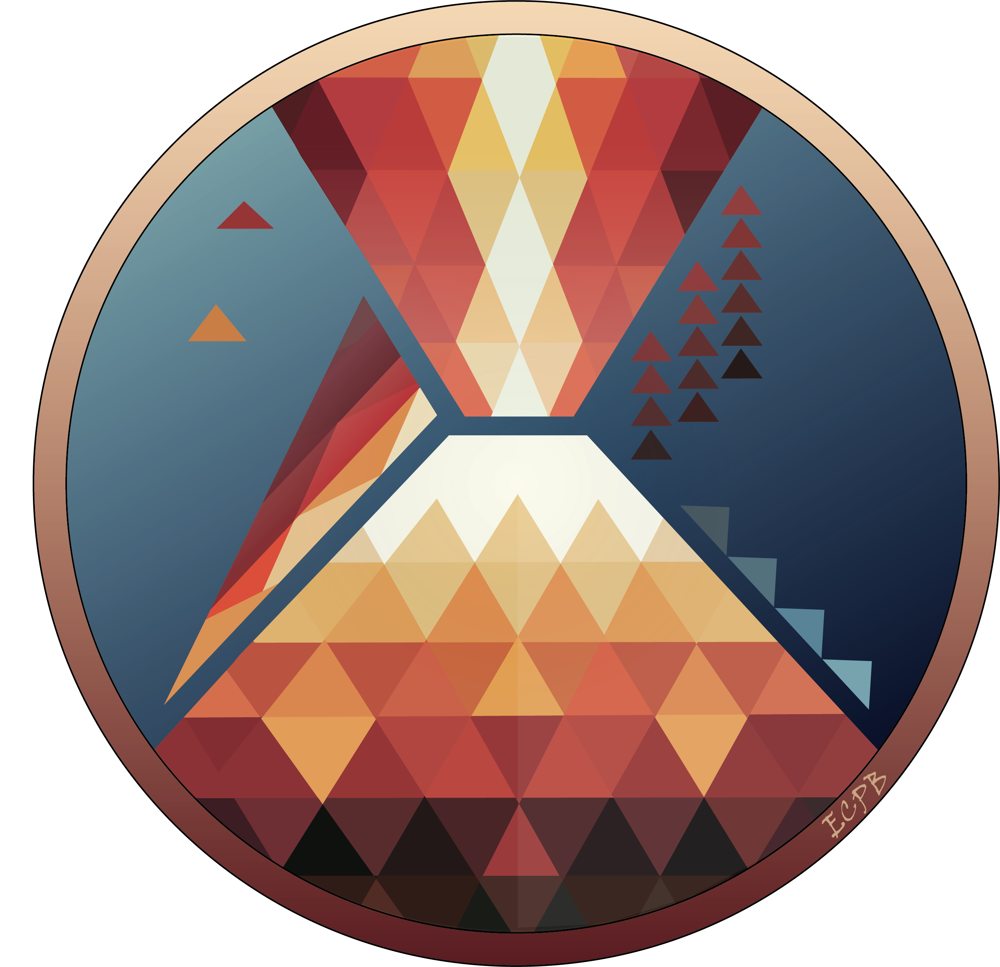

VOLCANIC TIME
Eric C.P. Breard · GVP catalog
Each eruption record plays one drum or cymbal hit. VEI determines which instrument plays and which quiet piano note accompanies it. Higher VEI gives a lower, longer piano note. Unknown VEI gives only a drum-rim tap, with no piano.
Longitude sets the balance between the left and right speakers. Less precise start dates make piano notes begin more gently.
Recorded start dates set the timing. Different historical periods are sped up by different amounts. No backing beat or repeating melody is added; repeated sounds alone do not indicate a volcanic cycle.
Volcanic Explosivity Index (0–8): primarily bulk tephra volume; roughly 10× per step from VEI 2. ? = unknown, not zero. Click a colour to hear it; once sound has started, hovering while paused plays it too.
When on, the relief, coastlines and plate boundaries turn grey, so only the eruptions carry colour. Eruption colours stay the same, and exports use the map shown.
When on, eruption rings stop expanding and fade away sooner. Playback speed, eruption records and sound stay the same.